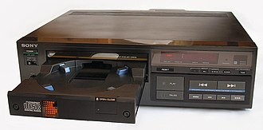

Un reproductor de CD es un dispositivo electrónico que reproduce discos compactos de audio, un formato digital de disco óptico de almacenamiento de datos. Los CD contienen normalmente grabaciones de material de audio como música o audiolibros. Los reproductores de CD se vendieron por primera vez al gran público en 1982.
 Volver